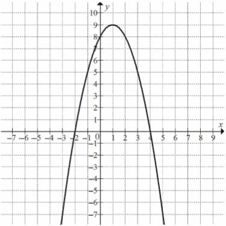
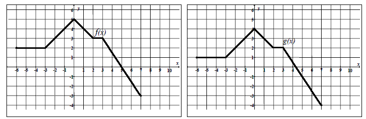
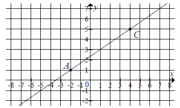
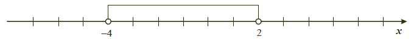
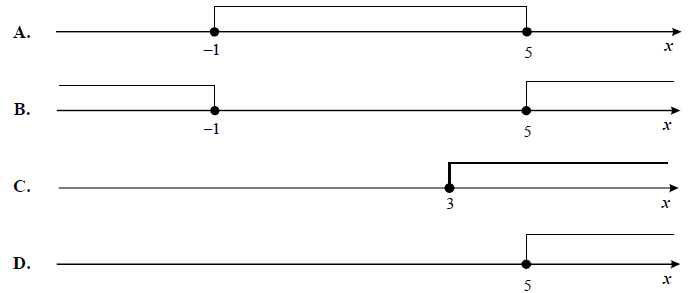

Jesteś tutaj: Matura → Pewniaki maturalne
Pewniaki maturalne
Poniżej prezentuje typy zadań najczęściej pojawiające się na maturze podstawowej z
matematyki w nowej formule (od 2015 roku). Pewniaki są aktualne dla najbliższej matury 2019. Polecam
również przerobić zadania treningowe od CKE
Wśród podanych przykładów znajdują się jedynie wybrane typy zadań. Pełną wiedzę
niezbędną do zdania matury na 100% znajdziesz w kursie do matury podstawowej.
Typ I - zadania z potęg i pierwiastków
Na maturze bardzo często pojawiają się zadania sprawdzające umiejętność wykonywania działań na potęgach, pierwiastkach. Oto przykłady takich zadań:Liczba \(\frac{4^5\cdot 5^4}{20^4}\) jest równa
A.\( 4^4 \)
B.\( 20^{16} \)
C.\( 20^5 \)
D.\( 4 \)
D
Dla każdej dodatniej liczba \(a\) iloraz \(\frac{a^{-2{,}6}}{a^{1{,}3}}\) jest
równy
A.\( a^{-3{,}9} \)
B.\( a^{-2} \)
C.\( a^{-1{,}3} \)
D.\( a^{1{,}3} \)
A
Liczba \(\frac{9^5\cdot 5^9}{45^5}\) jest równa
A.\( 45^{40} \)
B.\( 45^9 \)
C.\( 9^4 \)
D.\( 5^4 \)
D
Liczba \(\sqrt{\frac{9}{7}}+\sqrt{\frac{7}{9}}\) jest równa
A.\( \sqrt{\frac{16}{63}} \)
B.\( \frac{16}{3\sqrt{7}} \)
C.\( 1 \)
D.\( \frac{3+\sqrt{7}}{3\sqrt{7}} \)
B
Typ II - procenty
Równie często na maturze podstawowej pojawiają się zadania z procentów (zazwyczaj jest jedno takie zadanie za 1 punkt) tego typu:Liczby \(a\) i \(c\) są dodatnie. Liczba \(b\) stanowi \(48\%\) liczby \(a\) oraz
\(32\%\) liczby \(c\). Wynika stąd, że
A.\( c=1{,}5a \)
B.\( c=1{,}6a \)
C.\( c=0{,}8a \)
D.\( c=0{,}16a \)
A
Buty, które kosztowały \(220\) złotych, przeceniono i sprzedano za \(176\) złotych.
O ile procent obniżono cenę butów?
A.\( 80 \)
B.\( 20 \)
C.\( 22 \)
D.\( 44 \)
B
Dany jest prostokąt o wymiarach \(40 \text{ cm} \times 100 \text{ cm}\). Jeżeli
każdy z dłuższych boków tego prostokąta wydłużymy o \(20\%\), a każdy z krótszych boków skrócimy o
\(20\%\), to w wyniku obu przekształceń pole tego prostokąta
A.zwiększy się o \( 8\% \)
B.zwiększy się o \( 4\% \)
C.zmniejszy się o \( 8\% \)
D.zmniejszy się o \( 4\% \)
D
Kwotę \(1000\) zł ulokowano w banku na roczną lokatę oprocentowaną w wysokości
\(4\%\) w stosunku rocznym. Po zakończeniu lokaty od naliczonych odsetek odprowadzany jest podatek w
wysokości \(19\%\). Maksymalna kwota, jaką po upływie roku będzie można wypłacić z banku, jest równa
A.\( 1000\cdot \left ( 1+\frac{81}{100}\cdot \frac{4}{100} \right ) \)
B.\( 1000\cdot \left ( 1-\frac{19}{100}\cdot \frac{4}{100} \right ) \)
C.\( 1000\cdot \left ( 1-\frac{81}{100}\cdot \frac{4}{100} \right ) \)
D.\( 1000\cdot \left ( 1+\frac{19}{100}\cdot \frac{4}{100} \right ) \)
A
Typ III - logarytmy
Na maturze praktycznie zawsze pojawia się przynajmniej jedno zadanie na liczenie logarytmów. Oto przykładowe zadania:Liczba \(\log_{\sqrt{2}}(2\sqrt{2})\) jest równa
A.\( \frac{3}{2} \)
B.\( 2 \)
C.\( \frac{5}{2} \)
D.\( 3 \)
D
Liczba \(\frac{\log_3729}{\log_636}\) jest równa
A.\( \log_6693 \)
B.\( 3 \)
C.\( \log_{\frac{1}{2}}\frac{81}{4} \)
D.\( 4 \)
B
Dane są liczby \(a=-\frac{1}{27}\), \(b=\log_{\frac{1}{4}}64\),
\(c=\log_{\frac{1}{3}}27\). Iloczyn \(abc\) jest równy
A.\( 3 \)
B.\( \frac{1}{3} \)
C.\( -\frac{1}{3} \)
D.\( -9 \)
C
Wartość wyrażenia \(\log_50{,}04-\frac{1}{2}\log_{25}1\) jest równa
A.\( -3 \)
B.\( -2\frac{1}{4} \)
C.\( -2 \)
D.\( 0 \)
C
Typ IV - równania i nierówności liniowe oraz funkcja liniowa
Jednym z ważniejszych pojęć na maturze podstawowej jest funkcja liniowa i związane z nią równania oraz nierówności. Zazwyczaj z tego zagadnienia pojawia się na maturze od 2 do 5 zadań. Z funkcji liniowych szczególnie często zdarzają się zdania sprawdzające umiejętność liczenia miejsc zerowych, oraz badanie równoległości i prostopadłości prostych.Równanie \(\frac{x-1}{x+1}=x-1\)
A.ma dokładnie dwa rozwiązania \( x=0 \), \(x=1\)
B.ma dokładnie jedno rozwiązanie \( x=-1 \)
C.ma dokładnie jedno rozwiązanie \( x=0 \)
D.ma dokładnie jedno rozwiązanie \( x=1 \)
A
Równanie wymierne \(\frac{3x-1}{x+5}=3\), gdzie \(x\ne -5\),
A.nie ma rozwiązań rzeczywistych.
B.ma dokładnie jedno rozwiązanie rzeczywiste.
C.ma dokładnie dwa rozwiązania rzeczywiste.
D.ma dokładnie trzy rozwiązania rzeczywiste.
A
Najmniejszą liczbą całkowitą spełniającą nierówność \(\frac{x}{5}+\sqrt{7}\gt 0\)
jest
A.\( -14 \)
B.\( -13 \)
C.\( 13 \)
D.\( 14 \)
B
Najmniejszą liczbą całkowitą spełniającą nierówność \(2(x − 2) \le 4(x −1)+1\) jest
A.\( -2 \)
B.\( -1 \)
C.\( 0 \)
D.\( 1 \)
C
Równość \(\frac{m}{5-\sqrt{5}}=\frac{5+\sqrt{5}}{5}\) zachodzi dla
A.\( m=-5 \)
B.\( m=1 \)
C.\( m=4 \)
D.\( m=5 \)
C
Dana jest funkcja liniowa \(f(x)=\frac{3}{4}x+6\). Miejscem zerowym tej funkcji
jest liczba
A.\( 8 \)
B.\( 6 \)
C.\( -6 \)
D.\( -8 \)
D
Funkcja liniowa \(f\) określona wzorem \(f(x)=2x+b\) ma takie samo miejsce zerowe,
jakie ma funkcja \(g(x)=-3x+4\). Stąd wynika, że
A.\( b=-\frac{8}{3} \)
B.\( b=\frac{4}{3} \)
C.\( b=4 \)
D.\( b=-\frac{3}{2} \)
A
Wykres funkcji liniowej \(y = 2x − 3\) przecina oś \(Oy\) w punkcie o współrzędnych
A.\( (0,-3) \)
B.\( (-3,0) \)
C.\( (0,2) \)
D.\( (0,3) \)
A
Prosta \(l\) o równaniu \(y=m^2x+3\) jest równoległa do prostej \(k\) o równaniu
\(y=(4m-4)x-3\). Zatem:
A.\( m=2 \)
B.\( m=-2 \)
C.\( m=-2-2\sqrt{2} \)
D.\( m=2+2\sqrt{2} \)
A
Proste o równaniach: \(y=2mx-m^2-1\) oraz \(y=4m^2x+m^2+1\) są prostopadłe dla
A.\( m=-\frac{1}{2} \)
B.\( m=\frac{1}{2} \)
C.\( m=1 \)
D.\( m=2 \)
A
Proste opisane równaniami \(y=\frac{2}{m-1}x+m-2\) oraz \(y=mx+\frac{1}{m+1}\) są
prostopadłe, gdy
A.\( m=2 \)
B.\( m=\frac{1}{2} \)
C.\( m=\frac{1}{3} \)
D.\( m=-2 \)
C
Typ V - równania i nierówności kwadratowe oraz funkcja kwadratowa
Zadania związane z funkcją kwadratową, to na każdej maturze punkt obowiązkowy. Musimy umieć znajdować miejsca zerowe funkcji kwadratowej (czyli rozwiązywać równania kwadratowe), wierzchołek oraz zapisywać w różnych postaciach funkcję kwadratową (ogólna, iloczynowa i kanoniczna). Musimy również umieć rysować wykresy funkcji kwadratowej, co szczególnie przydaje się podczas rozwiązywania nierówności kwadratowych (praktycznie zawsze pojawia się na maturze takie zadanie za 2 punkty). Często również pojawiają się zadania na znajdowanie wartości ekstremalnych funkcji kwadratowych na przedziałach domkniętych. Dokładniejsze omówienie tych wszystkich zagadnień znajdziesz w kursie do matury podstawowej (części: 14-15 oraz 26-30), a poniżej przykładowe, najczęstsze typy zadań:Równość \((2\sqrt{2}-a)^2=17-12\sqrt{2}\) jest prawdziwa dla
A.\( a=3 \)
B.\( a=1 \)
C.\( a=-2 \)
D.\( a=-3 \)
A
Oblicz najmniejszą i największą wartość funkcji kwadratowej \(f(x)=x^2-6x+3\) w
przedziale \(\langle 0,4\rangle \).
\(f_{max}=3\) oraz \(f_{min}=-6\)
Rozwiąż nierówność \(2x^2-4x\gt (x+3)(x-2)\).
\(x\in (-\infty ;2)\cup (3;+\infty )\)
Rozwiąż nierówność \(2x^2-4x\gt 3x^2-6x\).
\(x\in (0;2)\)
Rozwiąż nierówność \(20x \ge 4x^2 + 24\).
\(x\in \langle 2;3\rangle \)
Rozwiąż nierówność \(3x^2-6x\ge (x-2)(x-8)\)
\(x\in (-\infty ,-4\rangle \cup \langle 2,+\infty )\)
Funkcja kwadratowa \(f\) określona jest wzorem \(f(x) = ax^2 + bx + c\). Zbiorem
rozwiązań nierówności \(f(x) \gt 0\) jest przedział \((0,12)\). Największa wartość funkcji
\(f\) jest równa \(9\). Oblicz współczynniki \(a\), \(b\) i \(c\) funkcji \(f\).
\(a=-\frac{1}{4}\), \(b=3\), \(c=0\)
Na rysunku przedstawiony jest fragment paraboli będącej wykresem funkcji
kwadratowej \(f\). Wierzchołkiem tej paraboli jest punkt \(W=(1,9)\). Liczby \(-2\) i \(4\) to
miejsca zerowe funkcji \(f\). 
Najmniejsza wartość funkcji \(f\) w przedziale \(\langle -1;2 \rangle \) jest równa
A.\( 2 \)
B.\( 5 \)
C.\( 8 \)
D.\( 9 \)
B
Jeśli funkcja kwadratowa \(f(x)=x^2+2x+3a\) nie ma ani jednego miejsca zerowego, to
liczba \(a\) spełnia warunek
A.\( a\lt -1 \)
B.\( -1\le a\lt 0 \)
C.\( 0\le a\lt \frac{1}{3} \)
D.\( a\gt \frac{1}{3} \)
D
Funkcja kwadratowa jest określona wzorem \(f(x)=x^2-11x\). Oblicz najmniejszą
wartość funkcji \(f\) w przedziale \(\langle -6,6\rangle \).
\(-30\frac{1}{4}\)
Typ VI - różne zadania z funkcji
Częstym na maturze zdarza się zadanie, w którym należy wyznaczyć zbiór wartości funkcji danej na wykresie, lub odgadnąć przesunięcie. Oto przykładowe takie zadania:Na rysunku przedstawiono wykres funkcji \(f\).  Zbiorem wartości funkcji \(f\) jest
Zbiorem wartości funkcji \(f\) jest
Zbiorem wartości funkcji \(f\) jest A.\( (-2,2\rangle \)
B.\( \langle -2,2\rangle \)
C.\( \langle -2,2) \)
D.\( (-2,2) \)
A
Na rysunku przedstawiony jest fragment paraboli będącej wykresem funkcji
kwadratowej \(f\). Wierzchołkiem tej paraboli jest punkt \(W=(1,9)\). Liczby \(-2\) i \(4\) to
miejsca zerowe funkcji \(f\).
Zbiorem wartości funkcji \(f\) jest przedział
A.\( (-\infty ;-2\rangle \)
B.\( \langle -2;4 \rangle \)
C.\( \langle 4;+\infty ) \)
D.\( (-\infty ;9\rangle \)
D
Gdy przesuniemy wykres funkcji \(f(x)=2x-3\) o \(2\)
jednostki w prawo i \(4\) jednostki w górę, to otrzymamy wykres funkcji opisanej wzorem
A.\( y=2(x-2)+4 \)
B.\( y=2(x-2)-4 \)
C.\( y=2(x-2)+1 \)
D.\( y=2(x+2)+4 \)
C
Funkcja \(g\) jest określona wzorem 
A.\( g(x)=f(x-1) \)
B.\( g(x)=f(x)-1 \)
C.\( g(x)=f(x+1) \)
D.\( g(x)=f(x)+1 \)
B
Typ VII - układy równań
Często na maturze jest jedno zadanie z układu równań następujących typów:Układ równań \(\begin{cases} 2x-3y=5 \\ -4x+6y=-10 \end{cases} \)
A.nie ma rozwiązań.
B.ma dokładnie jedno rozwiązanie.
C.ma dokładnie dwa rozwiązania.
D.ma nieskończenie wiele rozwiązań.
D
Układ równań \(\begin{cases} x-y=3 \\ 2x+0{,}5y=4 \end{cases} \) opisuje w układzie
współrzędnych na płaszczyźnie
A.zbiór nieskończony.
B.dokładnie 2 różne punkty.
C.dokładnie jeden punkt.
D.zbiór pusty.
C
Typ VIII - wartość bezwzględna i błędy
Czasami na maturze jest jedno zadanie z wartości bezwzględnej lub błędów względnych i bezwzględnych. Oto przykładowe zadania jakie mogą się pojawić:Liczba \(\frac{|3-9|}{-3}\) jest równa
A.\( 2 \)
B.\( -2 \)
C.\( 0 \)
D.\( -4 \)
B
W tabeli przedstawiono roczne przyrosty wysokości pewnej sosny w ciągu sześciu
kolejnych lat.
Oblicz średni roczny przyrost wysokości tej sosny w badanym okresie sześciu lat. Otrzymany
wynik zaokrąglij do \(1\) cm. Oblicz błąd względny otrzymanego przybliżenia. Podaj ten błąd w
procentach.
| kolejne lata | 1 | 2 | 3 | 4 | 5 | 6 |
| przyrost (w cm) | 10 | 10 | 7 | 8 | 8 | 7 |
\(4\%\)
Typ IX - trygonometria
Zadania z trygonometrii pojawiają się a każdej maturze podstawowej. Oto najczęstsze typy:Kąt \(\alpha \) jest ostry i \(\operatorname{tg} \alpha =\frac{2}{3}\). Wtedy
A.\( \sin \alpha =\frac{3\sqrt{13}}{26} \)
B.\( \sin \alpha =\frac{\sqrt{13}}{13} \)
C.\( \sin \alpha =\frac{2\sqrt{13}}{13} \)
D.\( \sin \alpha =\frac{3\sqrt{13}}{13} \)
C
Liczba \( \sin 150^\circ \) jest równa liczbie
A.\( \cos 60^\circ \)
B.\( \cos 120^\circ \)
C.\( \operatorname{tg} 120^\circ \)
D.\( \operatorname{tg} 60^\circ \)
A
Dany jest trójkąt prostokątny o kątach ostrych \(\alpha \) i \(\beta \), w którym
\(\sin \alpha = \frac{\sqrt{6}}{3}\). Wtedy
A.\( \cos \alpha =\frac{\sqrt{3}}{2} \)
B.\( \cos \beta =\frac{\sqrt{6}}{3} \)
C.\( \operatorname{tg} \alpha =\frac{\sqrt{3}}{3} \)
D.\( \operatorname{tg} \beta =\frac{\sqrt{6}}{2} \)
B
Dana jest liczba \(a=\sin 72^\circ \). Zapisz liczbę \(1+\operatorname{tg}^2
72^\circ \) w zależności od \(a\).
\(\frac{1}{1-a^2}\)
Wartość wyrażenia \((\operatorname{tg} 60^\circ +\operatorname{tg} 45^\circ
)^2-\sin 60^\circ \) jest równa
A.\( 2-\frac{3\sqrt{3}}{2} \)
B.\( 2+\frac{\sqrt{3}}{2} \)
C.\( 4-\frac{\sqrt{3}}{2} \)
D.\( 4+\frac{3\sqrt{3}}{2} \)
D
W układzie współrzędnych zaznaczono kąt \(\alpha \).  Jedno z ramion kąta \(\alpha \) przechodzi przez punkt
\(P=(-4,3)\). Wtedy:
Jedno z ramion kąta \(\alpha \) przechodzi przez punkt
\(P=(-4,3)\). Wtedy:
Jedno z ramion kąta \(\alpha \) przechodzi przez punkt
\(P=(-4,3)\). Wtedy: A.\( \cos \alpha = \frac{4}{5} \)
B.\( \cos \alpha = -\frac{4}{5} \)
C.\( \cos \alpha = -\frac{4}{3} \)
D.\( \cos \alpha = -\frac{3}{4} \)
B
Typ X - ciąg arytmetyczny i geometryczny
Zadania z ciągów zawsze pojawiają się na maturze. Zawsze są przynajmniej dwa zadania z tego zagadnienia. Poniżej prezentuję najczęstsze typy zadań z ciągów:Czternasty wyraz ciągu arytmetycznego jest równy \(8\), a różnica tego ciągu jest
równa \(\left (-\frac{3}{2}\right )\). Siódmy wyraz tego ciągu jest równy
A.\( \frac{37}{2} \)
B.\( -\frac{37}{2} \)
C.\( -\frac{5}{2} \)
D.\( \frac{5}{2} \)
A
Wszystkie dwucyfrowe liczby naturalne podzielne przez \(7\) tworzą rosnący ciąg
arytmetyczny. Dwunastym wyrazem tego ciągu jest liczba
A.\( 77 \)
B.\( 84 \)
C.\( 91 \)
D.\( 98 \)
C
W rosnącym ciągu geometrycznym \((a_n)\), określonym dla \(n\ge 1\), spełniony jest
warunek \(a_4=3a_1\). Iloraz \(q\) tego ciągu jest równy
A.\( q=\frac{1}{\sqrt[3]{3}} \)
B.\( q=\frac{1}{3} \)
C.\( q=3 \)
D.\( q=\sqrt[3]{3} \)
D
Trójwyrazowy ciąg \((x+1,x-1,2x)\) jest arytmetyczny dla
A.\( x=-3 \)
B.\( x=-1 \)
C.\( x=0 \)
D.\( x=2 \)
A
Ciąg \((x,2x+3,4x+3)\) jest geometryczny. Pierwszy wyraz tego ciągu jest równy
A.\( -4 \)
B.\( 1 \)
C.\( 0 \)
D.\( -1 \)
D
Typ XI - geometria płaska
W geometrii najczęściej przydaje się nam twierdzenie Pitagorasa i musimy je umieć stosować na blachę (jest ono również bardzo przydatne w geometrii przestrzennej). Zadania z geometrii zazwyczaj nie są szablonowe, więc trudno tu podać konkretne typy jako pewniaki. Na pewno można wyróżnić zadania z kątami wpisanymi i środkowymi w okręgu - często się pojawiają na maturze. Także często pojawia się podobieństwo trójkątów.Punkty \(A\), \(B\), \(C\) i \(D\) leżą na okręgu o środku \(S\). Cięciwa \(CD\)
przecina średnicę \(AB\) tego okręgu w punkcie \(E\) tak, że \(|\sphericalangle BEC|=100^\circ \).
Kąt środkowy \(ASC\) ma miarę \(110^\circ \) (zobacz rysunek).  Kąt wpisany \(BAD\) ma miarę
Kąt wpisany \(BAD\) ma miarę
Kąt wpisany \(BAD\) ma miarę A.\( 15^\circ \)
B.\( 20^\circ \)
C.\( 25^\circ \)
D.\( 30^\circ \)
C
W okręgu o środku \(O\) dany jest kąt o mierze \(50^\circ \), zaznaczony na
rysunku.  Miara kąta oznaczonego na
rysunku literą \(\alpha \) jest równa
Miara kąta oznaczonego na
rysunku literą \(\alpha \) jest równa
Miara kąta oznaczonego na
rysunku literą \(\alpha \) jest równa A.\( 40^\circ \)
B.\( 50^\circ \)
C.\( 20^\circ \)
D.\( 25^\circ \)
A
Przedstawione na rysunku trójkąty \(ABC\) i \(PQR\) są podobne. Bok \(AB\) trójkąta
\(ABC\) ma długość
A.\( 8 \)
B.\( 8{,}5 \)
C.\( 9{,}5 \)
D.\( 10 \)
B
Okręgi o promieniach \(3\) i \(4\) są styczne zewnętrznie. Prosta styczna do okręgu
o promieniu \(4\) w punkcie \(P\) przechodzi przez środek okręgu o promieniu \(3\) (zobacz rysunek).
Pole trójkąta, którego
wierzchołkami są środki okręgów i punkt styczności \(P\), jest równe
A.\( 14 \)
B.\( 2\sqrt{33} \)
C.\( 4\sqrt{33} \)
D.\( 12 \)
B
Typ XII - geometria przestrzenna
Zadania ze stereometrii często pojawiają się za większa liczbę punktów.Przekątna podstawy graniastosłupa prawidłowego czworokątnego jest dwa razy dłuższa
od wysokości graniastosłupa. Graniastosłup przecięto płaszczyzną przechodzącą przez przekątną
podstawy i jeden wierzchołek drugiej podstawy (patrz rysunek). Płaszczyzna przekroju tworzy z podstawą graniastosłupa kąt
\(\alpha \) o mierze
A.\( 30^\circ \)
B.\( 45^\circ \)
C.\( 60^\circ \)
D.\( 75^\circ \)
B
Wysokość graniastosłupa prawidłowego czworokątnego jest równa \(16\). Przekątna
graniastosłupa jest nachylona do płaszczyzny podstawy pod kątem, którego cosinus jest równy
\(\frac{3}{5}\). Oblicz pole powierzchni całkowitej tego graniastosłupa.
\(P=144+384\sqrt{2}\)
Podstawą ostrosłupa \(ABCDS\) jest prostokąt, którego boki pozostają w stosunku \(3
: 4\), a pole jest równe \(192\) (zobacz rysunek). Punkt \(E\) jest wyznaczony przez przecinające
się przekątne podstawy, a odcinek \(SE\) jest wysokością ostrosłupa. Każda krawędź boczna tego
ostrosłupa jest nachylona do płaszczyzny podstawy pod kątem \(30^\circ\). Oblicz objętość
ostrosłupa. 
\(V=\frac{640\sqrt{3}}{3}\)
Kąt rozwarcia stożka ma miarę \(120^\circ \), a tworząca tego stożka ma długość
\(4\). Objętość tego stożka jest równa
A.\( 36\pi \)
B.\( 18\pi \)
C.\( 24\pi \)
D.\( 8\pi \)
D
Trójkąt równoboczny \(ABC\) jest podstawą ostrosłupa prawidłowego \(ABCS\), w
którym ściana boczna jest nachylona do płaszczyzny podstawy pod kątem \(60^\circ \), a krawędź
boczna ma długość \(7\) (zobacz rysunek). Oblicz objętość tego ostrosłupa. 
\(V=21\sqrt{7}\)
Typ XIII - geometria analityczna
Z geometrii analitycznej na pewno musimy umieć liczyć długość odcinka, wyznaczać równania prostych przechodzących przez dwa punkty, a także równoległych i prostopadłych, wyznaczać środek odcinka. Oto przykładowe zadania z tych zagadnień:W układzie współrzędnych dane są punkty \(A=(a,6)\) oraz \(B=(7,b)\). Środkiem
odcinka \(AB\) jest punkt \(M=(3,4)\). Wynika stąd, że
A.\( a=5 \) i \(b=5\)
B.\( a=-1 \) i \(b=2\)
C.\( a=4 \) i \(b=10\)
D.\( a=-4 \) i \(b=-2\)
B
Na rysunku jest przedstawiona prosta zawierająca przekątną \(AC\) rombu \(ABCD\)
oraz wierzchołki \(A=(-2,1)\) i \(C=(4,5)\) tego rombu.  Wskaż równanie prostej zawierającej przekątną \(BD\) tego
rombu.
A.\( y=-\frac{2}{3}x+\frac{11}{3} \)
B.\( y=-\frac{3}{2}x+4 \)
C.\( y=-x+4 \)
D.\( y=-\frac{3}{2}x+\frac{9}{2} \)
D
Okręgi o środkach \(S_1=(3,4)\) oraz \(S_2=(9,-4)\) i równych promieniach są
styczne zewnętrznie. Promień każdego z tych okręgów jest równy
A.\( 8 \)
B.\( 6 \)
C.\( 5 \)
D.\( \frac{5}{2} \)
C
W układzie współrzędnych dane są punkty \(A=(-43,-12)\), \(B=(50,19)\). Prosta
\(AB\) przecina oś \(Ox\) w punkcie \(P\). Oblicz pierwszą współrzędną punktu \(P\).
\(x=-7\)
Typ XIV - statystyka i rachunek prawdopodobieństwa
Ze statystyki najczęściej pojawiają się zadania związane ze średnią arytmetyczną i medianą. Zadania z kombinatoryki i rachunku prawdopodobieństwa zawsze opierają się na regule mnożenia i dodawania (zadani z kostkami i monetami, losowanie kul lub liczb ze zbioru).Jeżeli do zestawu czterech danych: \(4, 7, 8, x\) dołączymy liczbę \(2\), to
średnia arytmetyczna wzrośnie o \(2\). Zatem
A.\( x=-51 \)
B.\( x=-6 \)
C.\( x=10 \)
D.\( x=29 \)
A
Średnia arytmetyczna zestawu danych: \[2,4,7,8,9\] jest taka sama jak średnia
arytmetyczna zestawu danych: \[2,4,7,8,9,x.\] Wynika stąd, że
A.\( x=3 \)
B.\( x=5 \)
C.\( x=6 \)
D.\( x=0 \)
C
Średnia arytmetyczna sześciu liczb naturalnych: \(31, 16, 25, 29, 27, x\), jest
równa \(\frac{x}{2}\). Mediana tych liczb jest równa
A.\( 26 \)
B.\( 27 \)
C.\( 28 \)
D.\( 29 \)
C
W każdym z trzech pojemników znajduje się para kul, z których jedna jest czerwona,
a druga - niebieska. Z każdego pojemnika losujemy jedną kulę. Niech \(p\) oznacza prawdopodobieństwo
zdarzenia polegającego na tym, że dokładnie dwie z trzech wylosowanych kul będą czerwone. Wtedy
A.\( p=\frac{3}{8} \)
B.\( p=\frac{1}{4} \)
C.\( p=\frac{2}{3} \)
D.\( p=\frac{1}{2} \)
A
Rzucamy trzy razy symetryczną monetą. Niech \(p\) oznacza prawdopodobieństwo
otrzymania dokładnie dwóch orłów w tych trzech rzutach. Wtedy
A.\( 0\le p\le 0{,}2 \)
B.\( 0{,}2\le p\le 0{,}35 \)
C.\( 0{,}35\lt p\le 0{,}5 \)
D.\( 0{,}5\lt p\le 1 \)
C
Ile jest wszystkich dwucyfrowych liczb naturalnych podzielnych przez \(3\)?
A.\( 12 \)
B.\( 24 \)
C.\( 29 \)
D.\( 30 \)
D
Ze zbioru siedmiu liczb naturalnych \(\{1, 2, 3, 4, 5, 6, 7\}\) losujemy dwie różne
liczby. Oblicz prawdopodobieństwo zdarzenia polegającego na tym, że większą z wylosowanych liczb
będzie liczba \(5\).
\(\frac{4}{21}\)
Pewniaki na STARĄ podstawę programową
Poniżej prezentuję pewniaki do "starej" podstawy programowej.Cena towaru bez podatku VAT jest równa \(60\) zł. Towar ten wraz z podatkiem VAT w
wysokości \(22\%\) kosztuje
A.\( 73{,}20 \) zł
B.\( 49{,}18 \) zł
C.\( 60{,}22 \) zł
D.\( 82 \) zł
A
Samochód kosztował \(30000\) zł. Jego cenę obniżono o \(10\%\), a następnie cenę po
tej obniżce ponownie obniżono o \(10\%\). Po tych obniżkach samochód kosztował
A.\( 24400 \) zł
B.\( 24700 \) zł
C.\( 24000 \) zł
D.\( 24300 \) zł
D
Iloczyn \(81^2\cdot 9^4\) jest równy
A.\( 3^4 \)
B.\( 3^0 \)
C.\( 3^{16} \)
D.\( 3^{14} \)
C
Różnica \(\log_{3}9-\log_{3}1\) jest równa
A.\( 0 \)
B.\( 1 \)
C.\( 2 \)
D.\( 3 \)
C
Wskaż nierówność, która opisuje przedział zaznaczony na osi liczbowej. 
A.\( |x-1| \lt 3 \)
B.\( |x+1| \lt 3 \)
C.\( |x+1| > 3 \)
D.\( |x-1| > 3 \)
B
Wskaż rysunek, na którym jest przedstawiony zbiór rozwiązań nierówności \(|x-2| \ge 3\). 
B
Kwadrat liczby \(x=5+2\sqrt{3}\) jest równy
A.\( 37 \)
B.\( 25+4\sqrt{3} \)
C.\( 37+20\sqrt{3} \)
D.\( 147 \)
C
Równanie \(\frac{x^2-4}{(x-4)(x+4)}=0\)
A.nie ma rozwiązań.
B.ma dokładnie jedno rozwiązanie.
C.ma dokładnie dwa rozwiązania.
D.ma dokładnie cztery rozwiązania.
C
Wskaż \(m\), dla którego funkcja liniowa \(f(x)=(m−1)x+6\) jest rosnąca
A.\( m=-1 \)
B.\( m=0 \)
C.\( m=1 \)
D.\( m=2 \)
D
W ciągu arytmetycznym \((a_n)\) mamy: \(a_2=5\) i \(a_4=11\). Oblicz \(a_5\).
A.\( 8 \)
B.\( 14 \)
C.\( 17 \)
D.\( 6 \)
B
W ciągu geometrycznym \((a_n)\) dane są: \(a_1=2\) i
\(a_2=12\). Wtedy
A.\( a_4=26 \)
B.\( a_4=432 \)
C.\( a_4=32 \)
D.\( a_4=2592 \)
B
Kąt \(\alpha \) jest ostry i \(\cos \alpha =\frac{3}{4}\). Wtedy \(\sin \alpha \)
jest równy
A.\( \frac{1}{4} \)
B.\( \frac{\sqrt{3}}{4} \)
C.\( \frac{\sqrt{7}}{4} \)
D.\( \frac{7}{16} \)
C
Prosta \(l\) ma równanie \(y=-\frac{1}{4}x+7\). Wskaż
równanie prostej prostopadłej do prostej \(l\).
A.\( y=\frac{1}{4}x+1 \)
B.\( y=-\frac{1}{4}x-7 \)
C.\( y=4x-1 \)
D.\( y=-4x+7 \)
C
Proste o równaniach \(y=2x+3\) oraz \(y=-\frac{1}{3}x+2\)
A.są równoległe i różne
B.są prostopadłe
C.przecinają się pod kątem innym niż prosty
D.pokrywają się
C
Rozwiąż nierówność \(x^2−14x+24 \gt 0\).
\(x\in (-\infty ;2)\cup (12;+\infty )\)
Rozwiąż równanie \(x^3−3x^2+2x−6=0\).
\(x=3\)
Ciąg \((9, x, 19)\) jest arytmetyczny, a ciąg \((x, 42, y, z)\) jest geometryczny.
Oblicz \(x\), \(y\) oraz \(z\).
\(x=14\), \(y=126\), \(z=378\)
Z miejscowości \(A\) i \(B\) oddalonych od siebie o \(182\) km wyjeżdżają naprzeciw
siebie dwaj rowerzyści. Rowerzysta jadący z miejscowości \(B\) do miejscowości \(A\) jedzie ze
średnią prędkością mniejszą od \(25\) km/h. Rowerzysta jadący z miejscowości \(A\) do
miejscowości \(B\) wyjeżdża o \(1\) godzinę wcześniej i jedzie ze średnią prędkością o \(7\)
km/h większą od średniej prędkości drugiego rowerzysty. Rowerzyści spotkali się w takim miejscu, że
rowerzysta jadący z miejscowości \(A\) przebył do tego miejsca \(\frac{9}{13}\) całej drogi z \(A\)
do \(B\). Z jakimi średnimi prędkościami jechali obaj rowerzyści?
\(v_1=7\) km/h, \(v_2=14\) km/h